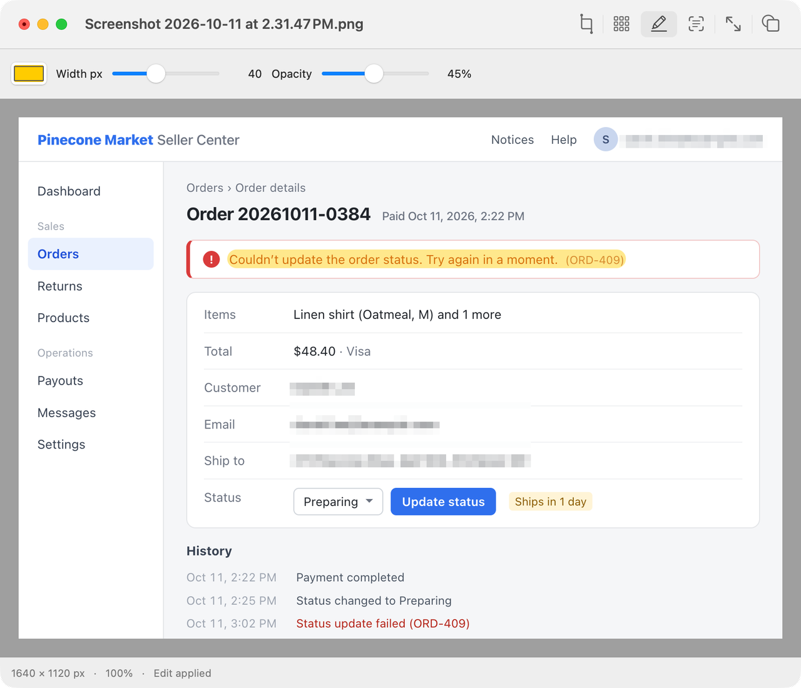

Highlight
Draw a translucent marker over anything. Pick the color, width and opacity.
Highlight the bug, hide the email, crop the noise. The one quick fix every screenshot needs before you send it.
macOS 14 or later · Apple Silicon · 2 MB download

Draw a translucent marker over anything. Pick the color, width and opacity.
Pixelate a region you select, or let Apple Vision find every line of English and Korean text. Check the boxes, then apply.
Drag a rectangle, nudge its edges, and cut a new image from it.
Scale with the proportions locked, type exact pixel dimensions, or turn the image by 90°.
Fill transparent areas with a solid color before saving to a format without alpha.
The first save always creates a copy. Undo as far back as you like. Images and text recognition never leave your Mac.
Opens PNG · JPEG · WebP · HEIC · AVIF · GIF · TIFF · BMP · PSD · RAW, and anything else macOS can decode
Saves PNG · JPEG · HEIC · WebP · AVIF (macOS 26) · TIFF · GIF · BMP · JPEG 2000 · TGA
Preview an image inline in a Kitty-compatible terminal, tmux
included. Inspect a file’s format, size and colors without opening
it. Crop, resize, rotate, mosaic and flatten with the engine the
app uses, into a new file or in place. When you’d rather see what
you’re doing, candy edit opens the app and hands the
shell straight back.
# Look
candy photo.png
candy inspect photo.heic
# Edit without leaving the shell
candy crop photo.png --rect 20,30,300,200 -o crop.png
candy resize photo.heic --width 1200 -o small.webp
candy rotate photo.jpg --cw --in-place
candy mosaic shot.png --text -o safe.png
candy flatten logo.png --background '#ffffff' -o flat.jpg
# Edit in the app; the shell stays free
candy edit photo.png
Homebrew installs the app and the candy command
together, or download the app from GitHub.
brew install --cask rath/tap/candyApple Silicon Macs running macOS 14 or later. Signed with a Developer ID and notarized by Apple. The whole app is under 4 MB and idles at about 30 MB of memory: native AppKit and Rust, no web view inside.